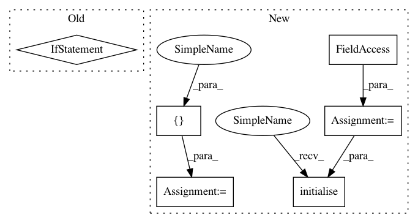

9943f36fd3cf218775b735ddd41e2939487c0e0f,niftynet/application/gan_application.py,GANApplication,initialise_dataset_loader,#GANApplication#Any#Any#Any#,42
Before Change
// read each line of csv files into an instance of Subject
if self.is_training:
self.readers = [ImageReader(["image", "conditioning"])]
if self.action_param.validate_every_n > 0:
self.readers.append(ImageReader(["image", "conditioning"]))
else: // in the inference process use image input only
self.readers = [ImageReader(["image"])]
file_list = data_partitioner.get_file_list()
for reader in self.readers:
After Change
self.readers.append(reader)
else:
inference_reader = ImageReader(["image"])
file_list = data_partitioner.inference_list
inference_reader.initialise(data_param, task_param, file_list)
self.readers = [inference_reader]
foreground_masking_layer = None
if self.net_param.normalise_foreground_only:
foreground_masking_layer = BinaryMaskingLayer(
In pattern: SUPERPATTERN
Frequency: 3
Non-data size: 6
Instances
Project Name: NifTK/NiftyNet
Commit Name: 9943f36fd3cf218775b735ddd41e2939487c0e0f
Time: 2017-11-14
Author: wenqi.li@ucl.ac.uk
File Name: niftynet/application/gan_application.py
Class Name: GANApplication
Method Name: initialise_dataset_loader
Project Name: NifTK/NiftyNet
Commit Name: 83f6726852bd539c427523bf4bf35f07b0744014
Time: 2017-11-14
Author: wenqi.li@ucl.ac.uk
File Name: niftynet/application/regression_application.py
Class Name: RegressionApplication
Method Name: initialise_dataset_loader
Project Name: NifTK/NiftyNet
Commit Name: feb66539626259c4aa79d07f82f4ae7b615e78e5
Time: 2018-02-13
Author: eli.gibson@gmail.com
File Name: niftynet/application/classification_application.py
Class Name: ClassificationApplication
Method Name: initialise_dataset_loader